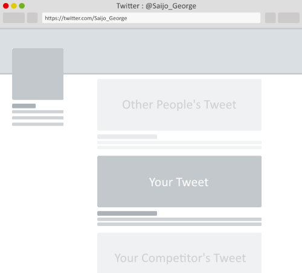
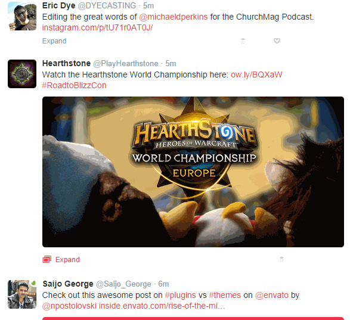

Do you want to standout on Twitter?
With so many of us pushing content on Twitter, it's hard to stand out in your follower's feed these days.
After analyzing various tweets that has caught my eye. I got a designer friend of mine to create these customizable PSD templates.
You can use these to recreate click worthy tweets for your followers.

List Post with X+ Items
Use this to promote a post, by highlighting the number of items. You can add multiple pics to form a collage and also mention the number of items on offer. PSD Template
There is more, click on the ► arrow or scroll to the right.
Ask your followers to reply
This type of tweet works well if you want your followers to reply to a question.
Fill in the blanks with your Tweets
Use this template if you want your followers to guess the answer to a question. On expanding the tweet you can see the answer.

When the user has to pick one or the other
This template is perfect when you want to offer two choice to your followers. In the timeline the choices are hidden from view and will only be revealed when the tweet is expanded.
When things go head to head
When you do a vs post or when it's the battle between two different things, this is the template you want.
When you are offering a discount
If you are offering a discount, you can use this template to show how much savings your followers are getting if they take you up on your offer. Use the S̶t̶r̶i̶k̶e̶t̶h̶r̶o̶u̶g̶h̶ ̶T̶e̶x̶t̶ ̶ Generator to re-enforce the message using the text in the tweet.
When you want to highlight something
This template is great, if you want to guide the user's attention to a few specific elements in the image.
Want to get notified, when we have new ones?
Signup below and I will send an email your way when I have new templates.
If you want an expert to help you customize the PSD images, you can hire one from Envato Studio.
Like these? Help me spread the word by sharing it